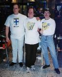
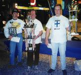

The prizes for the European championship.
The European Championship started right after the Swedish Championship's finals. It was a bit delayed, and the average game time increased... There were very good players, so nobody could be sure about winning this tournament. All matches were played in groups with 4 players. The 2 best players qualified to the next group, the 3rd player was moved to the loosers playoff and the 4th player was out of play. The loosers playoff ended up with four players who competed to get a place in the final. Only the winner was moved back to get a new chance, and it happened to be me... :) It was now still five players left (four unbeaten players, and the winner from the loosers final). We had to play one more match to get the three best players to a final match. In the first group we had Mats Andersson (SWE), Christian Magnusson (SWE) and Koste (FIN). The second group contained Erik Bengtsson (SWE) and Joska Keunekamp (NL). Christian Magnusson and Erik Bengtsson lost in that match, and the final could now begin.

JM A13 PM WW WhoD Total
Mats (SWE) 1 10 5 10 10 36
Koste (FIN) 5 5 10 1 5 26
Joska (NL) 10 1 1 5 1 18
Mats was very unlucky from the beginning, but he played better after
regaining into sense again... :) Well... It's not to far away from the truth,
because he gets very mad and unstable if he plays bad. After winning the
second game he knew he could do it, and nobody could stop him from scoring
hugh points after that.
|  |

|
 |
 These W3-pages are maintained by
These W3-pages are maintained by{kind=link}
{kind=link}